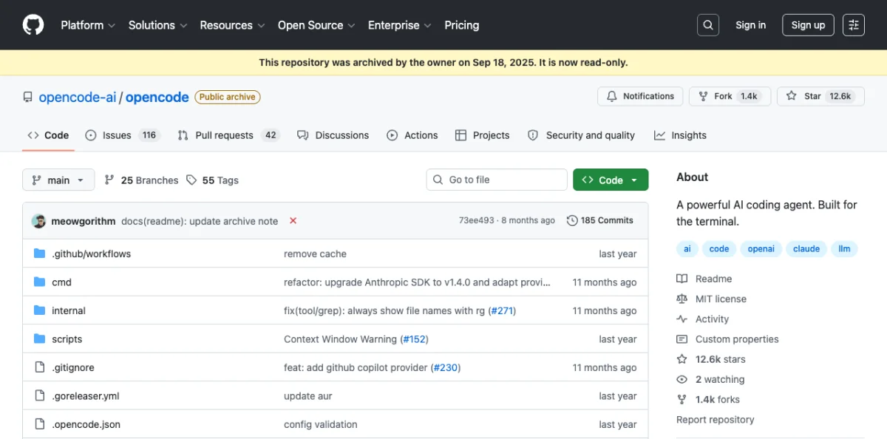
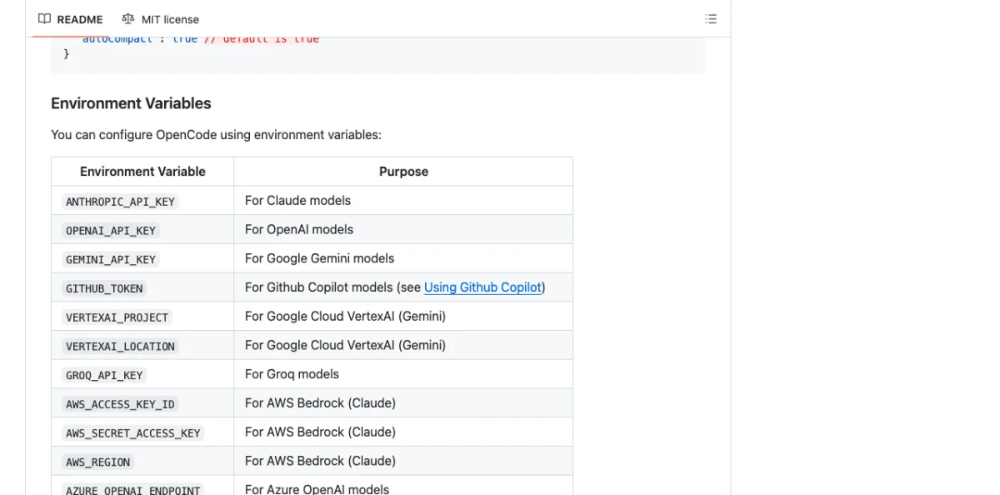

Appendix A Tool Comparison Matrix
Side-by-side feature comparisons for every tool covered in this book. One table per category, verified as of May 2026. Use these tables for quick lookups; the corresponding chapters provide the detailed walkthroughs.
Note: Pricing and feature details reflect publicly listed rates as of May 2026. Verify current pricing on each tool's website before making purchasing decisions.
Agent Platforms Compared
Four agent platforms dominate agentic design workflows as of May 2026. Each supports MCP, each has a different strength, and each takes a fundamentally different approach to skill management, permissions, and model access. The table below compares them across the dimensions that matter most for design work: how they connect to design tools, how they handle permissions, and what the real cost looks like when you use them daily.

The comparison criteria here focus on practical concerns, not marketing claims. "Design skill ecosystem" measures the availability of pre-built skills and plugins for design tasks --- reading canvas files, generating JSX, exporting assets. "Model access" matters because some agents lock you into one provider while others let you bring any API key.
| Feature | Claude Code | Codex CLI | OpenCode | Gemini CLI |
|---|---|---|---|---|
| Vendor | Anthropic | OpenAI | Open-source community | |
| License | Proprietary | Proprietary | MIT | Proprietary |
| Model access | Claude Opus / Sonnet | GPT-4o / o3 | BYOK (any provider) | Gemini 2.5 Pro |
| MCP support | Full (plugin + manual) | Full (Streamable HTTP) | Full (JSON config) | Full |
| Skill system | SKILL.md, plugins | Plugins | Skills, agents | Skills |
| Permission model | Per-tool allowlist | Per-tool allowlist | Configurable | Per-tool |
| Design skill ecosystem | Largest (Paper plugin, custom skills) | Growing | Extensive (Open Design, Huashu) | Emerging |
| Price | $100-200/mo (Max plan) | $200/mo (Pro) | Free (BYOK API costs) | Free (BYOK) |
| Best for design | Full-stack design-to-code | Rapid prototyping | Multi-agent design teams | Multimodal design input |
| Last verified | May 2026 | May 2026 | May 2026 | May 2026 |
Claude Code has the largest design skill ecosystem as of May 2026, driven by Anthropic's plugin marketplace and the Paper plugin specifically. Codex CLI is catching up fast --- OpenAI's plugin infrastructure is maturing, but design-specific skills remain thinner. OpenCode is the interesting outlier: it does not ship its own model, so you bring whatever API key you want. That flexibility comes with more configuration overhead, but it also means you can swap models mid-project without changing agents.
Gemini CLI's strength is multimodal input. If your design workflow starts with screenshots, photos, or whiteboard captures, Gemini's vision capabilities give it an edge for the initial design-to-prompt translation. Its skill ecosystem is the thinnest of the four, but Google is investing heavily here.
My take: For design work specifically, Claude Code is the most complete option today. The Paper plugin alone --- read designs, export JSX, write HTML back to canvas --- eliminates half the friction in a design-to-code workflow. But if you work across multiple model providers or need to run parallel agents with different models, OpenCode's BYOK architecture is the right call. In the author's experience, the $200/month price tag on Codex CLI is hard to justify for design work when the skill ecosystem is still growing.
Chapter 02 covers each platform in depth with installation and configuration details.
Design Canvas Tools Compared
The canvas is where design happens. These three tools --- Paper, Pencil, and OpenPencil --- take fundamentally different approaches to rendering, file formats, and agent integration. The comparison below covers the technical dimensions that determine how well each tool fits into an agentic workflow: canvas model (what you're actually manipulating), MCP integration (how agents talk to the canvas), code export quality (what you get out), and collaboration model (who else can work on the same file).

I excluded Figma from this table because Figma's MCP integration is read-only as of May 2026. Figma remains the dominant design tool for collaborative work, but agents can only read from it, not write to it. The three tools below all support bidirectional agent communication.
| Feature | Paper | Pencil | OpenPencil |
|---|---|---|---|
| Canvas model | Real HTML/CSS | WebGL (.pen JSON) | CanvasKit/Skia (.op JSON) |
| License | Commercial (freemium) | Commercial | MIT (open source) |
| Pricing | Free / $16/mo Pro | Free (IDE extension) | Free |
| Platform | Web + Desktop | Desktop + IDE | Web + Desktop + CLI |
| Collaboration | Real-time multiplayer | Local single-user | Planned |
| MCP server | Yes (22 tools) | Yes | Yes (built-in) |
| Code export | JSX + Tailwind via MCP | React + Tailwind via CLI | 10 platforms via MCP |
| Color support | sRGB + P3 + OkLCH | sRGB hex | sRGB hex |
| Agent compatible | Claude Code, Codex, Cursor, Copilot, OpenCode | Claude Code, OpenCode | Claude Code, Codex, OpenCode, Gemini, Copilot, Kiro |
| File format | .paper (HTML-based) | .pen (JSON) | .op (JSON) |
| Git integration | Via agent | Native (.pen in repo) | Native (Git panel, merge) |
| Last verified | May 2026 | May 2026 | May 2026 |
Paper's canvas model is the most unusual: it renders actual HTML and CSS, not an abstraction layer. When an agent writes to Paper, it writes HTML. When it reads from Paper, it reads HTML. This makes the design-to-code pipeline almost trivially short --- the design artifact is already code. The trade-off is that Paper cannot render vector shapes or complex illustrations the way a tool with a dedicated rendering engine can.
Pencil's strength is IDE integration. The .pen file format is JSON that lives in your repository alongside your source code. Design changes show up in git diff. Design reviews happen in pull requests. For teams already doing code review, Pencil fits into existing workflows without introducing a separate review tool.
OpenPencil's Agent Teams feature --- where multiple agents work different regions of the canvas simultaneously --- is the most architecturally interesting approach in the space. Each agent claims a spatial region, works independently, and the canvas merges the results. Chapter 11 covers this pattern in depth.
My take: Paper wins on collaboration and color fidelity --- sRGB + P3 + OkLCH is, as of this writing, the most complete color support of any design tool in this comparison. Pencil wins on IDE integration and diffability. OpenPencil wins on openness and multi-agent architecture. I use all three depending on the task. For solo design-to-code work, Pencil lives inside my IDE and I never leave my terminal. For team projects with stakeholders who need to see and comment on designs, Paper is the strongest option in the author's experience. OpenPencil's Agent Teams feature is the most interesting architectural experiment in the space right now.
Design Skill Frameworks Compared
Skills teach agents how to design. Two frameworks dominate as of May 2026: Open Design and Huashu Design. They take opposite approaches. Open Design is breadth-first --- 31 independent skills, 129 built-in design systems, covering everything from landing pages to dashboards to pitch decks. Huashu Design is depth-first --- one comprehensive skill that embeds 20 design philosophies, a Junior Designer Workflow, and explicit anti-AI-slop rules into a single SKILL.md file.
The comparison below covers architecture, output capabilities, and the self-critique mechanisms each framework provides. One important clarification: both frameworks implement a "5-dimension critique," but they are different implementations. Open Design's critique is a separate skill in its 31-skill library, focused on scoring output against design system constraints. Huashu Design's critique is built into its single skill, focused on five dimensions of design quality (philosophical consistency, visual hierarchy, detail execution, functionality, and innovation) with explicit scoring and a fix list. Same concept, different execution.
| Feature | Open Design | Huashu Design |
|---|---|---|
| License | Apache-2.0 | MIT |
| GitHub stars | 43.6k | 14.1k |
| Skills count | 31 | 1 (comprehensive) |
| Design systems | 129 built-in | Brand Asset Protocol |
| Agent support | 16 CLI agents auto-detected | Agent-agnostic (any markdown-skill agent) |
| Output formats | HTML, PDF, PPTX, ZIP, Markdown | HTML, MP4, GIF, PPTX, PDF |
| Visual directions | 5 schools (curated palettes) | 5 schools x 20 philosophies |
| Self-critique | 5-dimension design system critique (separate skill) | 5-dimension expert critique (built-in, scored with fix list) |
| Anti-AI-slop | Via design system constraints | Explicit anti-slop rules |
| Price | Free (open source) | Free (open source) |
| Architecture | Web + daemon + BYOK proxy | Skill file (SKILL.md) |
| Last verified | May 2026 | May 2026 |
The architectural difference matters in practice. Open Design runs a local web daemon and proxies API calls through your own keys. It detects which agent CLI you have installed and adjusts its output accordingly. This is powerful but requires a running process. Huashu Design is a single SKILL.md file that you drop into your project. No daemon, no proxy, no running process. The agent reads the file and follows the instructions. Simpler setup, but less infrastructure for managing multi-step workflows.
For output formats, the key differentiator is video. Huashu Design can export HTML animations to MP4 and GIF with 60fps interpolation and background music mixing. Open Design focuses on static and interactive outputs --- HTML, PDF, PPTX. If your design workflow includes motion, Huashu Design has the edge. If you need 129 pre-built design systems to choose from, Open Design is, in the author's experience, unmatched in this category.
Chapters 06 and 07 cover Open Design and Huashu Design in depth, respectively.
Motion and Video Tools Compared
Programmatic video for agents comes down to two approaches as of May 2026: React components (Remotion) or HTML-native animation (Hyperframes). The licensing difference alone is worth understanding before you commit. Remotion uses a custom source-available license that requires a paid license for companies with certain revenue thresholds. Hyperframes uses Apache-2.0, which is OSI-approved open source with no revenue restrictions.
The table below compares the authoring model, rendering pipeline, agent integration, and output capabilities. The core architectural difference: Remotion compiles React components into video frames through a bundler. Hyperframes plays HTML + CSS + GSAP animations directly in a browser and captures the output. No build step, no bundler --- the same index.html you preview in a browser is the file that gets rendered to MP4.
| Feature | Remotion | Hyperframes |
|---|---|---|
| License | Source-available (custom) | Apache-2.0 (OSI open source) |
| GitHub stars | 47.1k | 19k |
| Authoring format | React components (TSX) | HTML + CSS + GSAP |
| Build step | Required (bundler) | None (index.html plays as-is) |
| Animation model | Frame-accurate, seekable | Library-clock (GSAP, CSS, Lottie, Three.js) |
| Distributed rendering | Lambda (production-ready) | Single-machine today |
| Agent skills | Via SKILL.md | 12 skills bundled |
| MCP server | No | No |
| Agent compatible | Claude Code, Cursor | Claude Code, Cursor, Codex, Gemini |
| Block catalog | Community templates | 50+ ready-to-use blocks |
| Price | Free (companies need license) | Free |
| Last verified | May 2026 | May 2026 |
Remotion's frame-accurate rendering model is a genuine technical advantage for certain use cases. Because each frame is a React render, you can seek to any frame, scrub the timeline, and get deterministic output. Hyperframes uses GSAP's clock, which means the animation timing depends on the library's internal state. For most design-driven video --- product demos, explainer animations, social content --- this difference does not matter. For broadcast-quality or frame-precise compositing, Remotion has the edge.
Hyperframes' no-build-step approach is the better fit for agent workflows. An agent generates an HTML file with GSAP animations, and that file is immediately renderable. No npm install, no bundler configuration, no webpack or Vite setup. The 12 bundled skills cover common video patterns --- product demos, feature walkthroughs, social clips, title sequences. Remotion's community template ecosystem is larger, but the templates require more adaptation.
Distributed rendering is the area where Remotion is clearly ahead. Lambda-based rendering means you can parallelize frame computation across hundreds of instances. Hyperframes renders on a single machine today. For long-form video (10+ minutes) or batch rendering, this is a meaningful gap.
My take: For agent-driven design work, Hyperframes is, in the author's experience, the more practical choice. The no-build-step model aligns with how agents work --- generate a file, render it, iterate. The Apache-2.0 license removes the compliance question entirely. Remotion is, as of this writing, the stronger tool for production video teams that need distributed rendering and frame-accurate control, but that describes a different workflow than what this book covers.
Chapter 09 covers both tools in depth, including setup, animation composition, and rendering.
MCP-Connected Tools Compared
These tools connect to agents via MCP servers. They extend agent capabilities into existing design platforms --- reading Figma files, generating patterns in MagicPattern, or collaborating on Miro boards. Unlike the canvas tools in section A.2, these are not design surfaces themselves. They are external platforms that expose a subset of their functionality to agents through MCP.
The comparison below covers access level, authentication method, and key limitations. Access level is the most important dimension: read-only MCP servers (like Figma's) let agents extract information but never modify the source file. Read-write servers (like MagicPattern's) let agents both read and create content. This distinction determines whether you can close the design loop entirely within the agent session or need to switch back to the GUI for write operations.
| Feature | Figma MCP | Miro MCP | MagicPattern MCP |
|---|---|---|---|
| License | Proprietary | Proprietary | Proprietary |
| Access level | Read-only | Read + limited write | Read + write |
| Primary use | Read designs programmatically | AI-powered whiteboarding | Generative patterns |
| Agent compatible | Claude Code, Cursor, Codex | Claude Code, Cursor | Claude Code |
| Export formats | JSON, SVG, images | Board data, images | SVG, PNG, CSS backgrounds |
| Authentication | Figma API key | OAuth | API key |
| Price | Included with Figma | Included with Miro | Free / paid tiers |
| Key limitation | No write access, SVG fills as images | Limited write operations | Pattern types only |
| Last verified | May 2026 | May 2026 | May 2026 |
Figma's MCP server is the most widely used of the three, which makes sense given Figma's market position. But the read-only limitation is real. Agents can extract design tokens, read component structures, and download images, but they cannot create or modify frames. If your workflow requires writing back to Figma, you need the GUI or a third-party plugin.
Miro sits in the middle: agents can create sticky notes, add shapes to boards, and read board content. The write operations are limited to basic elements --- you cannot create complex diagrams or modify existing objects programmatically. For structured whiteboarding workflows where an agent captures meeting notes and organizes them on a board, Miro's MCP is sufficient.
MagicPattern has the broadest write access of the three. Agents can generate SVG patterns, export them as CSS backgrounds or PNG images, and iterate on pattern parameters. The limitation is scope: MagicPattern does one thing (generative patterns), and it does it well, but it will not help with layout, typography, or component design.
Tip: Chain these MCP servers for compound workflows. An agent can read a design system from Figma, extract the color palette, feed it to MagicPattern to generate background patterns, and write the results into a Paper canvas. Chapter 10 covers MCP chaining in detail.
Chapter 10 covers MCP integrations in depth, including configuration, chaining, and troubleshooting. Appendix B provides a complete reference for every MCP tool available in each server.